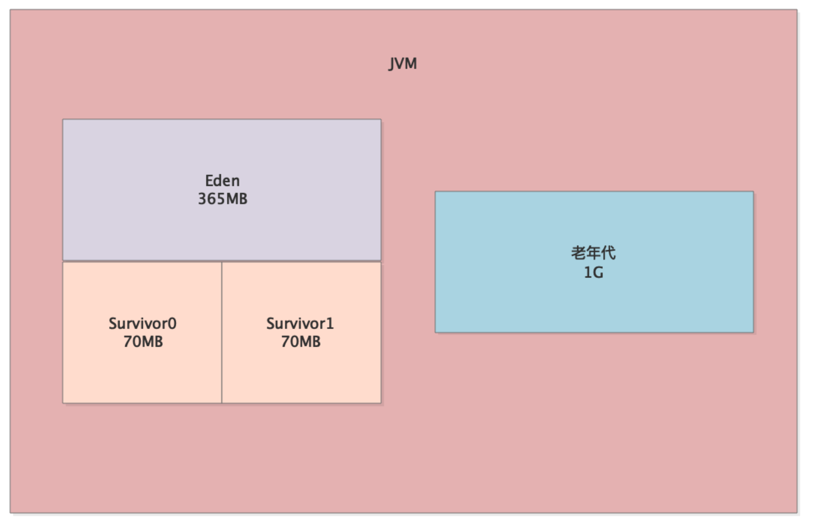
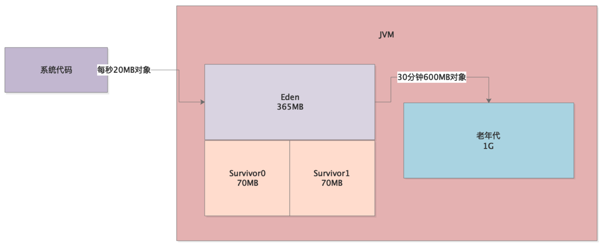
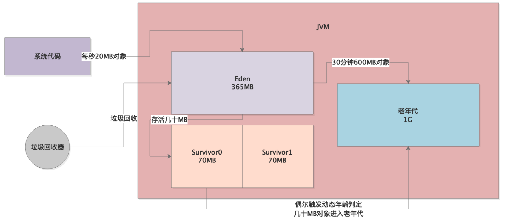
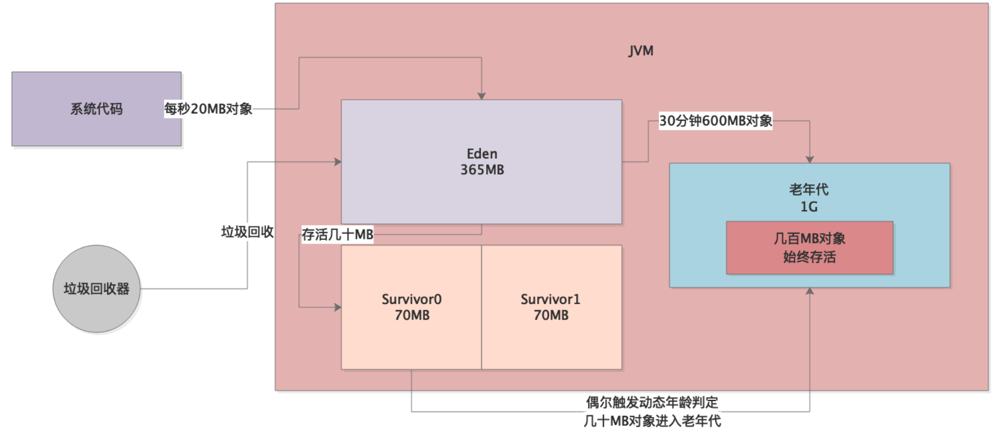

本章将介绍一个因为大对象而导致的频繁GC问题，其本质也是开发童鞋在写程序代码时存在bug，进而导致出现JVM性能问题。
首先，这个系统上线之后发现一天的Full GC次数多达几十次，通常来说，我们建议的一个比较良好的JVM性能，应该是Full GC几天才发生一次，或者最多一天发生几次而已。
生产环境这个系统部署在2核4G的机器上，JVM参数如下：-Xms=1536M -Xmx=1536M -Xmn=512M -Xss=256K -XX:SurvivorRatio=5 -XX:+UseParNewGC -XX:+UseConcMarkSweepGC -XX:CMSInitiatingOccupancyFraction=68 -XX:CMSParallelRemarkEnable -XX:UseCMSInitiatingOccupancyOnly -XX:+PrintGCDetails -XX:+PrintGCTimeStamps -XX:PrintHeapAtGC -Xloggc:gc.log
比较关键的几个设置是：
此时，整个系统对应的JVM内存模型如下：

我们通过jstat进行分析，统计出的JVM性能如下：
也就是说，平均每20s触发一次Young GC，每30分钟触发一次Full GC。根据Eden区和老年代的空间可以估算，系统每秒钟会产生约20MB对象进入Eden，每30分钟会有约600MB对象进入老年代：

根据参数-XX:CMSInitiatingOccupancyFraction=68，老年代内存使用达到68%，就会触发Full GC，一次Full GC时间约300ms。
通过上述的案例背景介绍，我们首先想到的是会不会因为Survivor区太小，导致Young GC后的存活对象太多，放不下Survivor了，所以就一直有对象流入老年代，进而导致30分钟后触发Full GC？
但这只是推论，因为对象进入老年代也可能是因为动态年龄判断规则，所以我们就需要通过工具在高峰期观察JVM的内存使用情况。
事实上，我们观察到每次 Young GC后进入老年代的对象非常少，而且一次Young GC的存活对象也就是几十MB，Survior区可以容纳，偶尔触发动态年龄判断规则时，才有几十MB对象进入老年代：

因此，分析到这里就很奇怪了，因为通过jstat追踪，并不是每次Young GC后都有几十MB对象进入老年代，而是偶尔才有对象进入老年代，记住，是偶尔。
那么老年代里面到底为什么会有那么多对象呢？
我们观察发现，系统运行一段时间后，突然间老年代中的对象就会增加五六百MB。
答案已经很明显了——大对象！一定是系统运行时，每隔一段时间就会产生几百兆的大对象，直接进入老年代，不会走年轻代的Eden区，然后配合年轻代还偶尔会有几十MB对象进入老年代，所以才30分钟触发一次Full GC：

了解了问题的所在，我们就开始针对这个案例进行优化。首先，就是要确定这个大对象到底是什么？
我们采用jmap工具导出一份JVM内存快照，然后通过jhat或者Visual VM之类的可视化工具进行分析，发现那几百兆大对象就是从数据库中查出的记录，然后对SQL进行排查，发现某个SQL在一种特殊场景下会执行类似SELECT * FROM的语句，导致一次性从数据库中查出几十万条数据。
针对该问题，主要做以下几点优化：
优化后的JVM参数如下：
-Xms=1536M -Xmx=1536M -Xmn=1024M -Xss=256K -XX:SurvivorRatio=5 -XX:PermSize=256M -XX:MaxPermSize=256M -XX:+UseParNewGC -XX:+UseConcMarkSweepGC -XX:CMSInitiatingOccupancyFraction=92 -XX:CMSParallelRemarkEnable -XX:UseCMSInitiatingOccupancyOnly -XX:+PrintGCDetails -XX:+PrintGCTimeStamps -XX:PrintHeapAtGC -Xloggc:gc.log
可以看到，新生代直接分配1G空间，其中Survivor各占150MB左右，此时Young GC过后的几十MB存活对象一般就不会进入老年代了。
同时，调整参数-XX:CMSInitiatingOccupancyFraction=92，将比例提高至92%，避免老年代仅占62%就触发Full GC。
最后，还设置永久代大小为256MB，因为默认永久代就几十MB，如果程序使用了反射等机制，很容
易被占满。
经过上述优化，系统基本上每分钟一次Young GC，几天才会发生一个Full GC。
本章，我们通过示例分析了大对象导致的频繁Full GC问题，并一步一步展现了发现问题、分析问题、解决问题的思路。当我们发现Young GC过后并不是每次都有很多存活对象进入老年代的时候，就要从别的角度考虑下到底为什么会有那么多存活对象进入老年代。